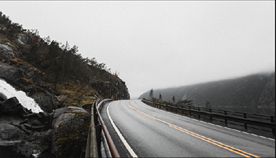

Sure, everybody knows that Google was created by Stanford Ph.D. students Larry Page and Sergey Brin who became gazillionaires. But did you know that Google's first storage device was cobbled together with LEGO? Or that Google's first investor wrote a $100,000 check even before the company officially existed? Or that it has its own 「official」 Google dog?
1. Before Google, There Was BackRub
In 1996, graduate students Larry Page and Sergey Brin worked on a research project to understand the link structure of the World Wide Web. They're particularly interested in determining the importance of a given web page based on its backlinks or how many other web pages link to it (which later became the concept behind Google's 「PageRank」 algorithm). The project was named BackRub (yes, a play on the word 「backlink」).
2. The Original Google Computer Storage
Larry and Sergey needed large amount of disk space to test their PageRank algo, but the largest hard disks available at the time were only 4 GB. So they assembled 10 of these drives together.
While he was an undergrad at Michigan University, Larry had built a programmable plotter out of LEGO, so it's only natural that he used the colorful bricks to create Google's first computer storage!
3. Google's First Investor
Sun Microsystem co-founder Andy Bechtolsheim knew a good thing when he saw it. After talking to Larry and Sergey about Google for 30 minutes, he whipped out his checkbook and wrote a check for $100,000, made out to 「Google, Inc.」 Problem was, Google, Inc. hasn't existed yet!
Oh, by the way, the Sun in Sun Microsystem stands for 「Stanford University Network.」
4. Google Garage
Talk about getting lucky tenants. In 1998, Susan Wojcicki rented her garage to two Stanford students – you know who they are – for $1,700 a month to help out with the mortgage. That turned out to be a life-changing decision for Susan – it got her a key early job at Google which translated to a top executive position later on, introduced a future husband to her younger sister Anne, and created a mini cottage industry for the rest of her family.
5. Google's First Dog
Despite the Internet's obsession with cats, dogs rule Google. In 1999, a Leonberger breed named Yoshka came to work with Google's first VP of Engineering Urs Hölzle and became the company's 「first」 dog.
If you must know, Leonbergers are big dogs with lionesque mane that look really majestic. They are, however, useless as guard dogs because they're much too kind and gentle.